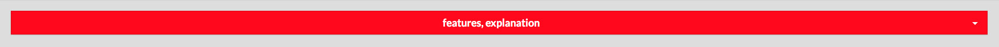
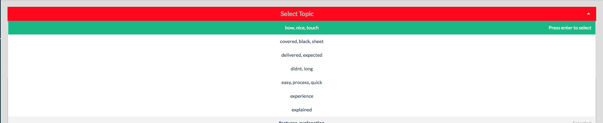
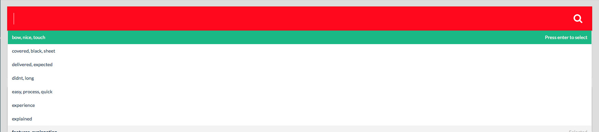
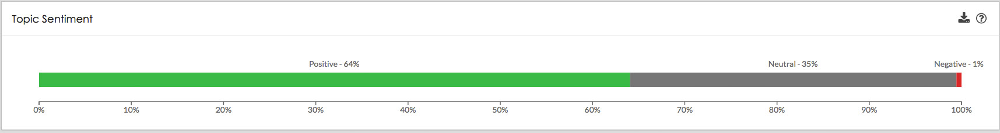
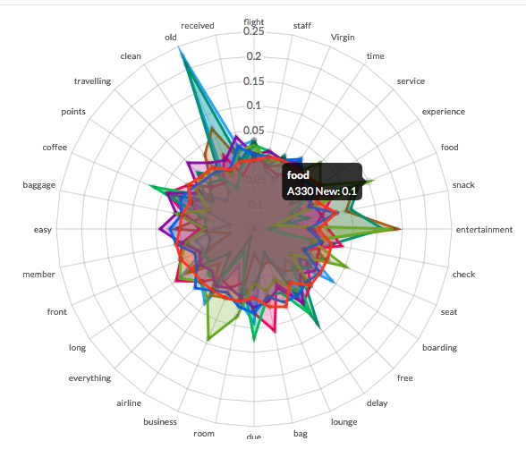
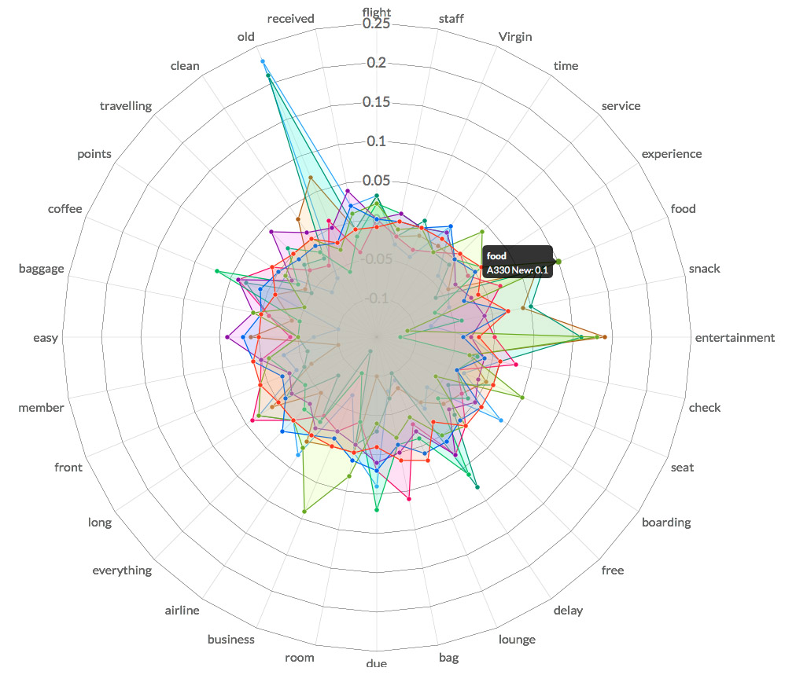

About
It is estimated that 80% of business information is in qualitative form.
- Analysis of data used to be largely inaccessible for small businesses with a limited budget.
- Kapiche utilizes cloud computing to offload data processing, offering data analytics at a more accessible price point.
- Over 15,000 spreadsheets have analysed by companies from around the world, particularly in marketing and customer service.
- None of the employees at Kapiche had any knowledge in usability or user experience. As a Human-Computer Interaction tutor, I was looking forward to applying the theory I taught into practice.

Heuristic Evaluation
First, I conducted a heuristic evaluation of the entire website with another intern.
I evaluated each screen against Jakob Nielsen’s 10 heuristics for usability design.
This helped me become familiar with the interface and capture my first impressions of how usable to website is.
We produced a document of 50+ usability problems, outlining the usability problem and a potential solution. We placed the solutions in a development backlog for addressing later.
Meanwhile, I explored the development environment. I placed a series of tasks into Jira, sent basic pull requests to Git, and became familiar with the syntax of Vue.js and Semantic UI.
Landing Page
Then, Kapiche needed an overhaul of their homepage to entice more potential customers.
I developed a new landing page for new visitors and potential customers will see, with the help of another designer.
I ensured that the landing page is visually striking, and follows sound usability principles.
I coded the website myself with the help of the Bulma CSS/HTML framework.
Data Usage
Kapiche needed a visualisation to show data usage of a single account.
I sketched any ideas I had into Adobe Illustrator. I purposely did not spend too much time on the visual design because I wanted to be able to rapidly test and change any ideas that I had.
I discovered the constraints of how I could design my graph. I quickly found out that my design was difficult to implement under the MetricsGraphics.js engine, so a redesign was made to better fit the libraries and still be intuitive for the user.
I fully implemented the data usage graph myself using the d3.js and the MetricsGraphics.js library by Mozilla. Users apply a filter at the top by data type, and date range. Visibility of lines can be toggled on and off in by clicking on their corresponding colour in the "Legend" section above. Data points can be explored by rolling the mouse over the graph.

Asyncronous Uploading
Kapiche wished to implement a feature to change setting on a file as it was being uploaded. Therefore, A new interface was required to show asynchronous uploading of files.
I made this interface using Adobe Photoshop, and splicing existing elements together.
I evaluated and took ideas from other websites on how they implement such an interface, rather than reinvnting the wheel.
Flat design principles were employed to ensure that the interface was visually striking.

Usability Testing
I conducted a series of one hour usability tests with real world customers to understand the context of use.
Google Hangouts was used to conduct 40-minute interviews and tests. The video stream was recorded, and notes were taken throughout the test.
The tests were structured as follows:
- Understand the people who use the product by asking open-ended questions about their work.
- Find out how the use the product by asking them to complete a set of typical tasks. Ensure that they are speaking out loud their thoughts while completing the task.
- Understand their frustrations by asking them open questions reflecting on the tasks they completed.
- Grading their experience on a scale by reading them a series of statements regarding the usability of the website, and answering from "Strongly Agree" to "Strongly Disagree"
We found users had some troubles with analysing files, and navigating through the various sections of the website. Measures were taken to address these concerns. These would not have been found without the help of thorough user interviews and usability tests.

Live Twitter UI
Kapiche were looking to set up stalls for various business analytics events and conferences. We would showcase visualisations as a live Twitter feed to draw interest for the conference and for the product.
I planned out various features, such as a timeline of the quantity of tweets over time, a bar chart showing interest by topic, and a vertical stream of the most recent tweets. I sketched these ideas into Adobe Photoshop to see how elements would be laid out, and what features should be included or scrapped.
I presented my sketches to the senior employees , who provided valuable feedback and clarified what features were needed to be shown.
I produced a second version of sketch with the feedback in mind. This time the visualisations took precedence over the tweets, and categories of topics were split into their own 'tabs'. This interface recieved positive reception from the CEO.
Miscellaneous Designs
I was given free reign to revamp any of the interactions in the website in the last week. Interfaces were designed on these principles:
- Make the designs easily visible.
- Ensure that the designs convey their intended use.
- Make users draw attention to the designs.
Header Before
The header is a tool to filter the charts by a particular topic. I found that the header was too small, and did not convey that the user that the header is also a place to input text.
 Header After
Now, the header is nice and large, and features icons and a cursor to indicate the expected use.
Sentiment Before
The sentiment chart displays an amalgamation of the feedback from processed language. The chart to me felt very hard to read, and left room for an attention-grabbing design.
Sentiment After
Now, the sentiment bar takes up the whole widget, and text can be easily located and read. It serves at a centrepiece for an overall impression of a topic.

Topic Before
This visualisation shows the frequency of a topic as a radial chart. Before, the visualisation looked very messy, with little insights to be drawn from one topic. It was also too small for mouse events to be accurate and useful.
Topic after
Now, the visualisation is much bigger. The colours are less pronounced so topics can be better distinguished from each other.
Results
I thoroughly enjoyed my time at Kapiche and learnt a lot about how the design process works in practice.
Next time, I would improve on the following aspects:
- Involve the entire team to the design process. This would mean conducting workshops on establishing requirements and finding a solution. Collaboration is key to designing and implementing a solution.
- Rely less on intuition for developing wireframes and conduct more usability tests to receive valuable feedback for my designs.
- Sketches were too high fidelity for a design that was not even tested yet. Created a lower fidelity prototype, test first, then use results to move on to a higher fidelity prototype. Instead of Illustrator or Photoshop, find quicker means to sketching designs such as balsamiq, or hand draw prototypes.
After my time there, Kapiche went on to achieve success in growth and new investments:
- Received $100,000 funding from the Queensland Government
- Selected for the River City Labs Startup Accelerator (10 out of 136 startups were accepted).
- Received more customers such as Qantas, PwC and Crown Casinos.